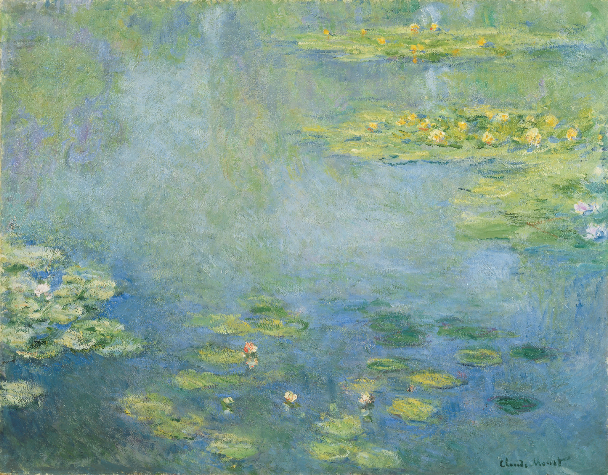
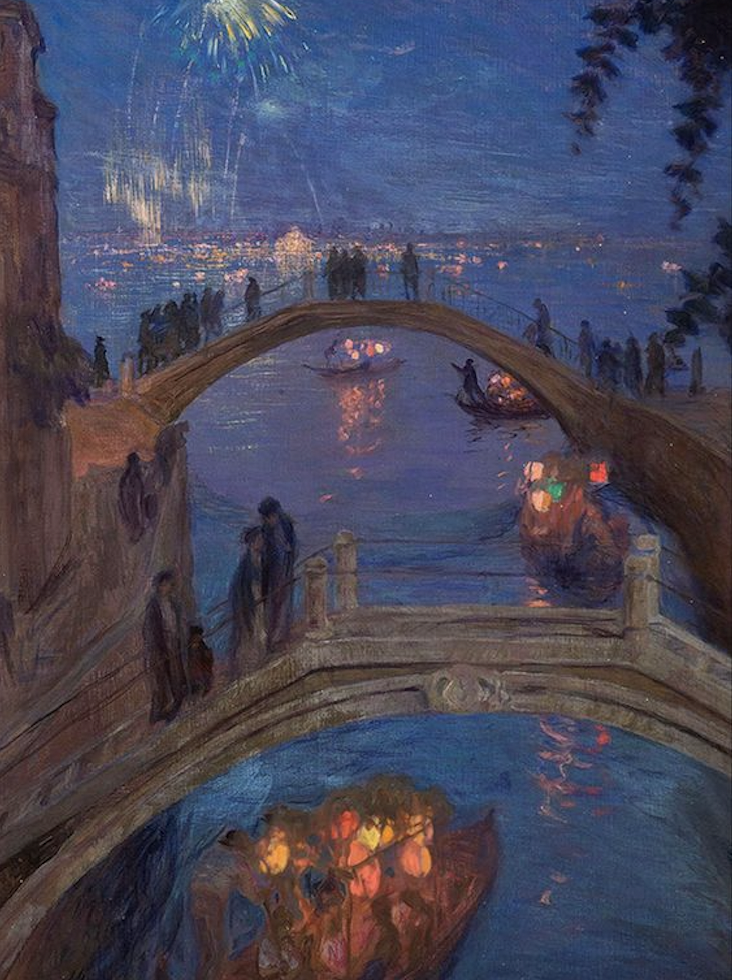
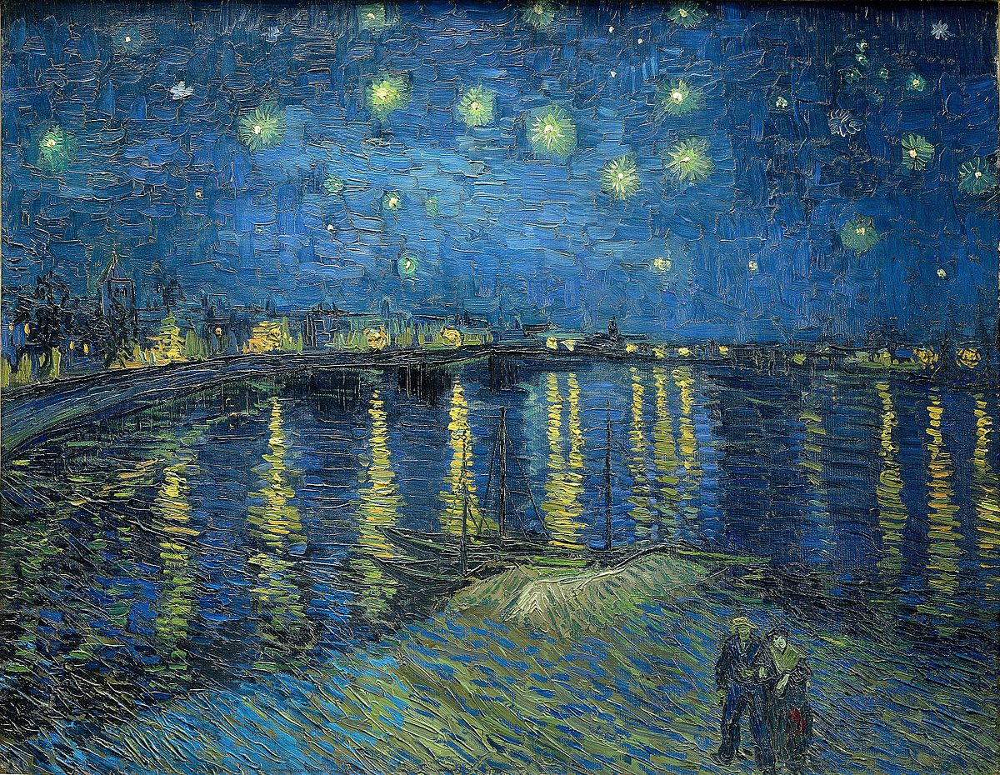
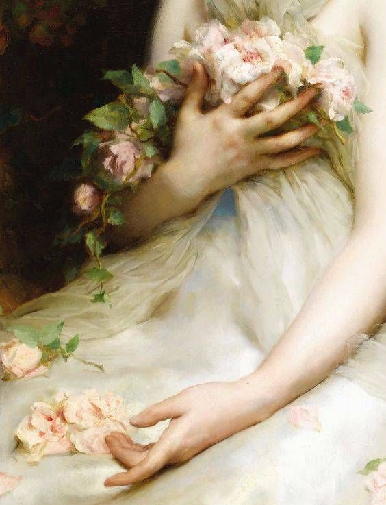
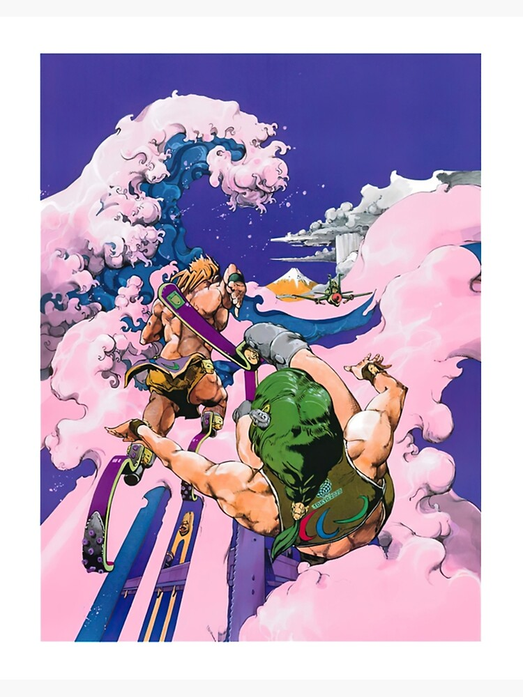
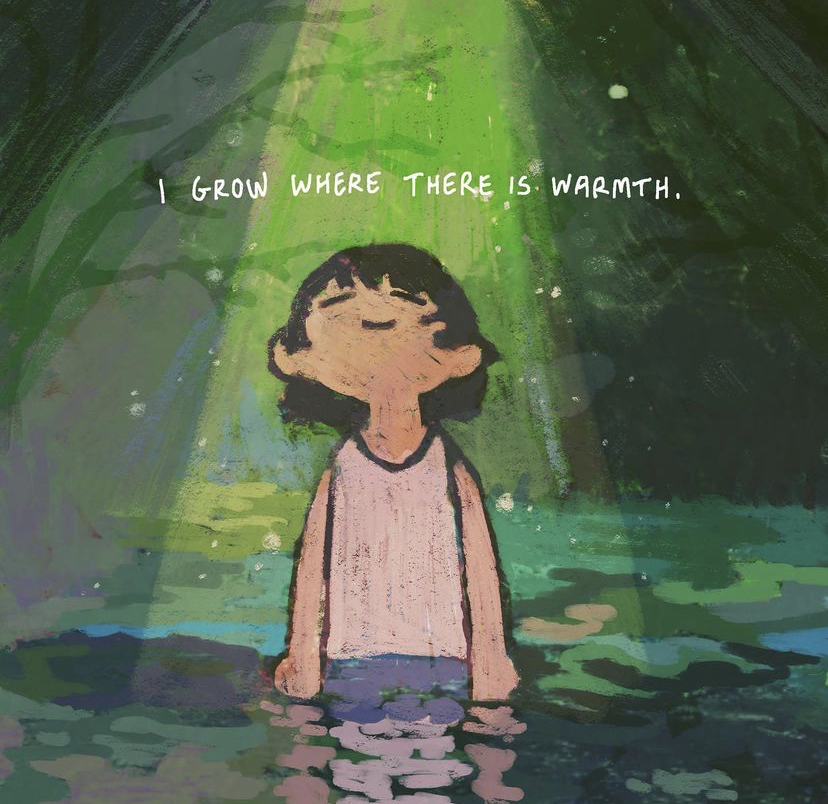
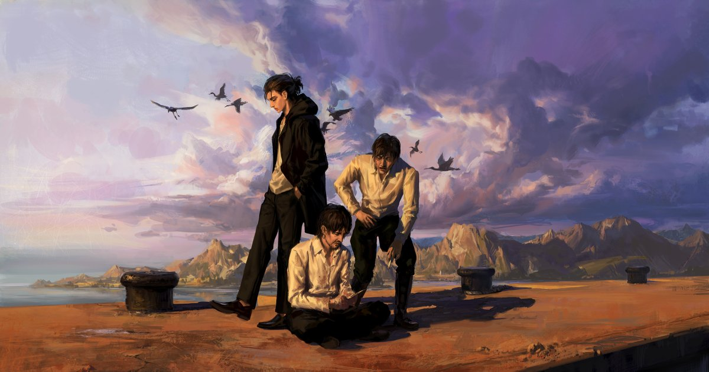
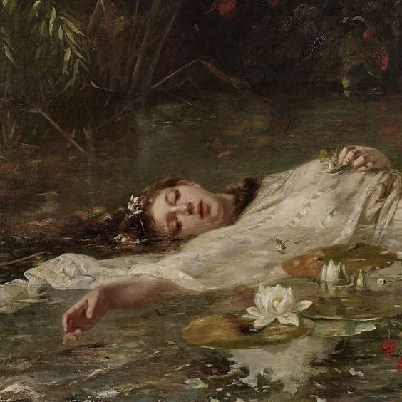
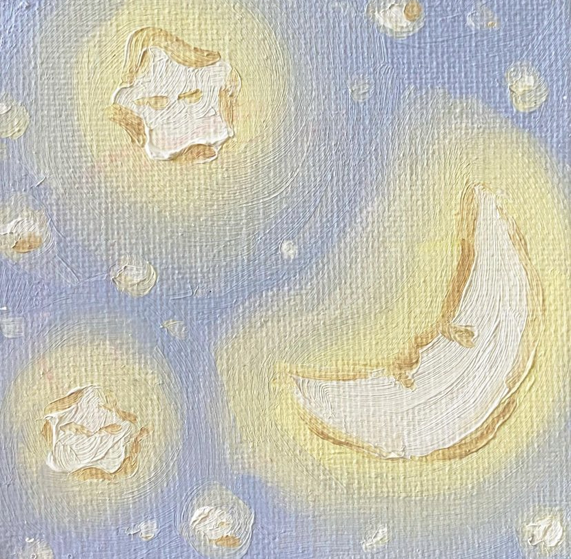

Water Lilies- Claude Monet 1919

The Feast of the Redeemer in Venice- Ferruccio Scattola 1909

Starry Night Over the Rhône- Vincent van Gogh 1888

Étienne Adolphe Piot- Jeune Femme 1850

Paralympics - Hirohiko Araki 2020

instagram: @onenhillion 2022

instagram: @enviep1 2021

Ophelia - Sir John Everett Millais 1851

instagram: @dayrisfelix 2020